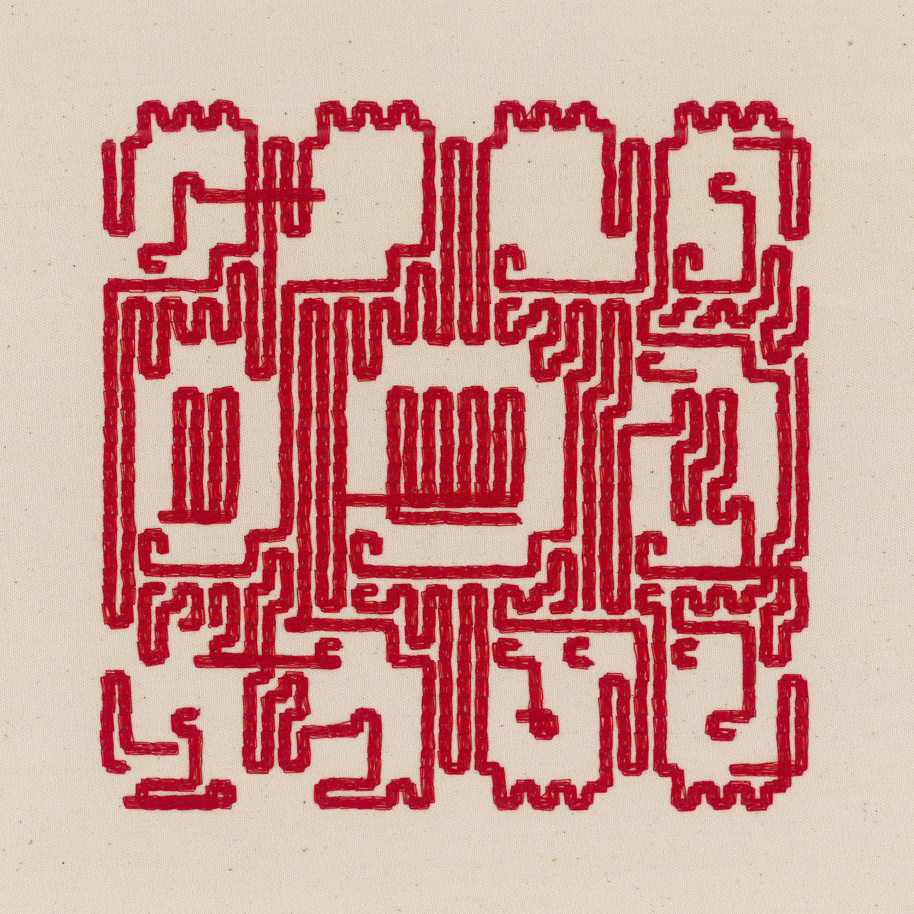
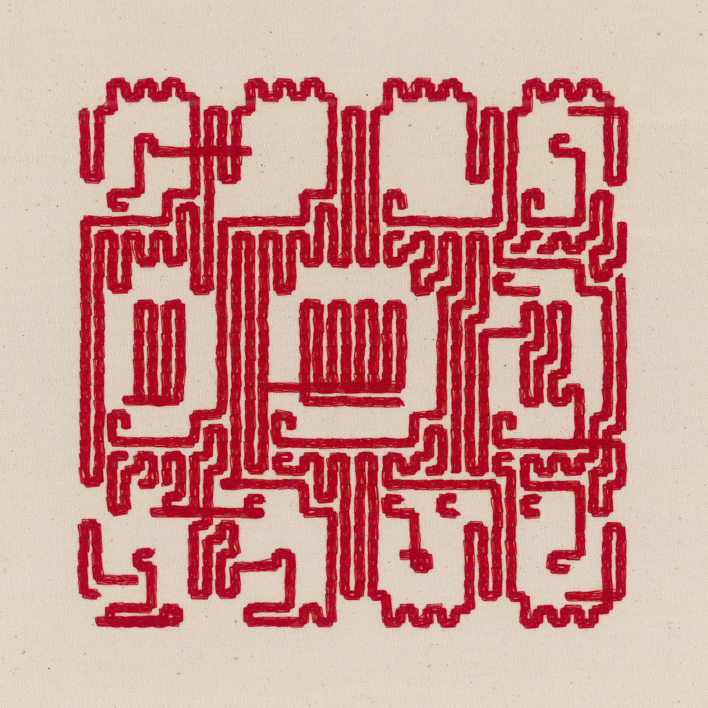

Anna Lucia
oefenstof (2024)
52 NFTs + machine embroidery on fabric
objkt contract
Publications: "Code and Craft at Its Best", Objkt blog, July 2024
Oefenstof* is a continuous project in which I created embroidered works of fabric from hand-coded algorithms.
Embroidery is one of the oldest decorative crafts, practiced since the invention of the needle and thread. At some point, embroidered realized they needed a way to record and reference different designs. The solution was the creation of the sampler, a piece of cloth decorated with different motifs. In Oefenstof, I examined the patterns and representations found in embroidery samplers, the act of recording embroidery work, and the transformation of traditional patterns through algorithmic processes.
Samplers often featured scattered motifs, bands of geometric and decorative borders, animals, floral motifs, and alphabets. Although found across diverse cultures and timelines, similarities can be found across different samplers, often executed in the binary form of a cross-stitch. This duality, stitch or no stitch, resonates with the binary logic of computation. I explored this intersection by reinterpreting traditional embroidery motifs using computer algorithms.
I built my own library of embroidery samplers using custom code and an embroidery machine. Historically, embroidery samplers were not only tools for record-keeping but also served educational purposes and functioned as aptitude tests for young girls learning the craft. By automating both the pattern-making and execution of the embroidery, the process questions the role and value of craft in an era of rapid technological acceleration and growing intimacy with our machines as collaborators.
In my experimentation, I applied well-known algorithms such as cellular automata and XOR patterns, yet their typical digital aesthetics are obscured by the constraints of the embroidery machine and the unpredictable dialogue between me and the computer. These limitations gave rise to new, labyrinth-like abstractions that emerge beneath the binary surface of the original patterns.
I released the project over approximately 4 months in 2024, with new pieces every Monday, Wednesday, and Friday, in total 52 works were released. Each (15 edition) NFT consists of a high-resolution scan of the embroidery work and a digital component.
*oefenstof translates from Dutch to “practice fabric” or “practice material” and is borrowed from the book Oefenstof by Joke Visser, a history of embroidery samplers from The Netherlands.


 
